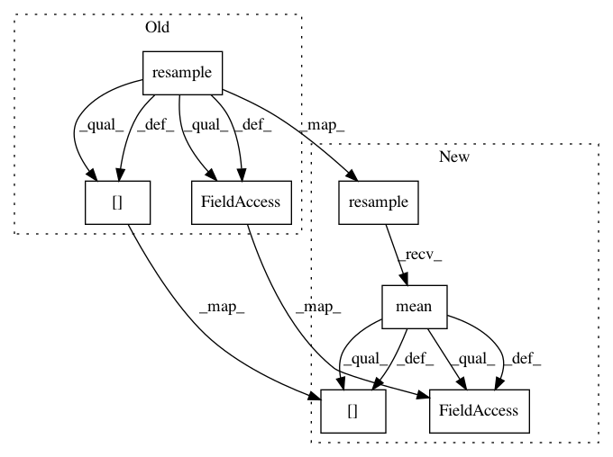

2345ff2a2a1a3da295890b19e453a250dfbd3baf,pythalesians/economics/events/eventstudy.py,EventStudy,get_surprise_against_intraday_moves_over_custom_event,#EventStudy#Any#Any#Any#Any#Any#Any#Any#Any#Any#Any#Any#,144
Before Change
ticker = event_fx + "-" + event_name + ".release-date-time-full"
data_frame_agg = None
data_frame_cross_orig = data_frame_cross_orig.resample("T") // resample to minute freq - in case there are missing values
ef_time_start = ef_time_frame[ticker] - timedelta(minutes=1) // start time
indices_start = data_frame_cross_orig.index.isin(ef_time_start)
for offset in offset_list:
data_frame_cross = data_frame_cross_orig
ef_time = ef_time_frame[ticker] + timedelta(minutes=offset - 1) // end time
// calculate returns over the x min event
indices = data_frame_cross.index.isin(ef_time)
col_dates = data_frame_cross.index[indices]
col_rets = (data_frame_cross.iloc[indices].values) \
/ (data_frame_cross.iloc[indices_start].values) - 1
mkt_moves = pandas.DataFrame(index=col_dates)
mkt_moves[cross + " " + str(offset) + "m move"] = col_rets
mkt_moves.index.name = ticker
mkt_moves.index = col_dates - timedelta(minutes=offset - 1)
data_frame = ef_time_frame.join(mkt_moves, on=ticker, how="inner")
temp_index = data_frame[ticker]
After Change
ticker = event_fx + "-" + event_name + ".release-date-time-full"
data_frame_agg = None
data_frame_cross_orig = data_frame_cross_orig.resample("T").mean() // resample to minute freq - in case there are missing values
ef_time_start = ef_time_frame[ticker] - timedelta(minutes=1) // start time
indices_start = data_frame_cross_orig.index.isin(ef_time_start)
for offset in offset_list:
data_frame_cross = data_frame_cross_orig
ef_time = ef_time_frame[ticker] + timedelta(minutes=offset - 1) // end time
// calculate returns over the x min event
indices = data_frame_cross.index.isin(ef_time)
col_dates = data_frame_cross.index[indices]
col_rets = (data_frame_cross.iloc[indices].values) \
/ (data_frame_cross.iloc[indices_start].values) - 1
mkt_moves = pandas.DataFrame(index=col_dates)
mkt_moves[cross + " " + str(offset) + "m move"] = col_rets
mkt_moves.index.name = ticker
mkt_moves.index = col_dates - timedelta(minutes=offset - 1)
data_frame = ef_time_frame.join(mkt_moves, on=ticker, how="inner")
temp_index = data_frame[ticker]
In pattern: SUPERPATTERN
Frequency: 3
Non-data size: 7
Instances
Project Name: cuemacro/finmarketpy
Commit Name: 2345ff2a2a1a3da295890b19e453a250dfbd3baf
Time: 2016-04-21
Author: saeedamen@hotmail.com
File Name: pythalesians/economics/events/eventstudy.py
Class Name: EventStudy
Method Name: get_surprise_against_intraday_moves_over_custom_event
Project Name: cuemacro/finmarketpy
Commit Name: ba67537f1e96f20573a113821b7cf1ff3342bae8
Time: 2017-02-21
Author: saeedamen@hotmail.com
File Name: finmarketpy/economics/seasonality.py
Class Name: Seasonality
Method Name: monthly_seasonality
Project Name: cuemacro/finmarketpy
Commit Name: ba67537f1e96f20573a113821b7cf1ff3342bae8
Time: 2017-02-21
Author: saeedamen@hotmail.com
File Name: finmarketpy/economics/seasonality.py
Class Name: Seasonality
Method Name: bus_day_of_month_seasonality